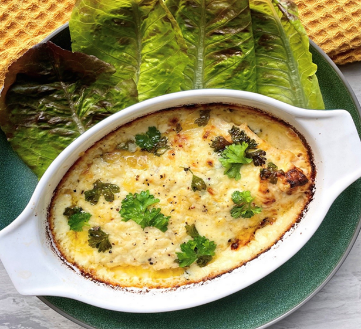

Kenny's Salmon - Final Fantasy XV

Description
A hearty cheesy dish from the franchise famed for creating
interesting and enticing in-game food. The dish is seen in Final
Fantasy XV, and can be purchased from the Crow's Nest Diner. The
meal gives the player +150 Strength and +200 Vitality.
Ingredients
- 2 fresh salmon fillets
- 2 garlic cloves
- 1 cup of mature cheddar cheese
- 2 tbsp of mascarpone cheese
- 2 tbsp of ricotta cheese
- 2 tbsp of butter
- 2 tbsp of plain flour
- 280ml of single cream
- A squeeze of lemon juice for taste
- Salt and pepper
- A handful of fresh parsley
- Gem lettuce for garnish
Steps
- Preheat your oven to 200 degrees. While it's heating up,
make sure the salmon is skinned and boneless.
- Place a large pan on a medium heat and add the butter and
flour. Combine them till you get a pale-yellow paste.
- Continue to constantly stir your mixture while adding your
single cream and a sprinkling of salt and pepper.
- Next, finely chop your garlic cloves and add them in as the
sauce begins to bubble. Continue stirring and add in your
mascarpone cheese.
- Once everything is combined, add in your ricotta, and mature
cheddar cheese and continue to stir. When all the cheese has
melted together, you should have a delicious cheesy sauce that
is lovely and thick.
- Now, place your salmon fillets into the baking dish and cover
with the sauce, adding any extra cheese on top if desired.
- Bake in the oven for 40 minutes and garnish with gem lettuce
for a tasty recreation of Kenny's salmon with all the in-game
buffs.